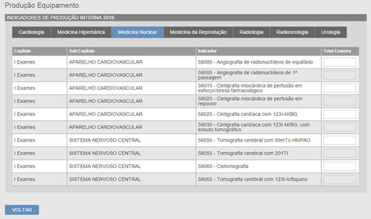

É neste módulo que são feitas ações sobre os recursos humanos afetos a serviços.
O utilizador pode consultar a lista dos recursos humanos afetos a serviços numa entidade no separador “RH Serviços” (Fig. 22), através do ponto “6.3 Consultar Entidade”.
Fig. 22 -Recursos Humanos afetos a serviços numa Entidade
Para poder criar RH Serviço, o utilizador deve clicar no botão “Criar” na página de RH Serviços de uma entidade (Fig. 22), preencher os campos obrigatórios e clicar em “GUARDAR”;
|
Campos Obrigatórios Fig. 23 |
||
|---|---|---|
|
a) |
Ano |
|
|
b) |
Grupo Profissional |
Assistente Operacional Assistente Técnico Enfermeiro Engenheiro Biomédico Engenheiro Físico Físico Internos Médico Radiofarmacêutico Técnico de Diagnóstico e Terapêutica |
|
c) |
Área de afetação |
Braquiterapia Cardiologia Cardiologia Pediátrica/Hemodinâmica Cardiologia/Hemodinâmica Cardiopneumologia Cirurgia Vascular Cirurgia Vascular/Hemodinâmica Gastroenterologia Medicina Hiperbárica Medicina Nuclear Neurorradiologia Pneumologia Radiologia Radiologia/Neurorradiologia Radioncologia |
|
d) |
Modalidade Vinculação |
Comissão Serviço Contrato Individual Trabalho Contrato Trabalho a Termo Resolutivo Certo Contrato Trabalho a Termo Resolutivo Incerto Contrato Trabalho em Funções Públicas a Termo Resolutivo Certo Contrato Trabalho em Funções Públicas a Termo Resolutivo Incerto Contrato Trabalho em Funções Públicas por Tempo Indeterminado Contrato Trabalho por Tempo Indeterminado Contratos de Prestação de Serviço |
|
e) |
Nº efetivos |
|
|
f) |
N.º horas semanais constantes no contrato profissional |
|
|
g) |
N.º de horas semanais atribuídas à realização de exames |
|
|
h) |
Nº horas extraordinárias/ano |
|
|
i) |
Nº horas prevenção |
|
|
j) |
Nº horas ao ato médico realizado |
|
|
k) |
Nº de exames contratados |
|
Fig. 23 -Criar RH Serviços
Após o registo dos dados deve clicar em “GUARDAR” para gravar o RH Serviço. Após clicar irá ser notificado com o resultado da operação.
O utilizador pode navegar para a página de consulta de RH Serviços após selecionar um RH Serviço da lista de RH Serviços existentes numa entidade (Fig. 22) e clicar no botão “CONSULTAR”.
Através da página de consulta de RH Serviços existentes numa entidade (Fig. 22), o utilizador pode navegar diretamente para a edição após selecionar um RH Serviço da lista e clicar no botão “EDITAR”.
A edição deve respeitar o preenchimento dos campos obrigatórios identificados no ponto “8.1 Criar RH Serviço”
No final da edição o utilizador para gravar as alterações deve clicar no botão “GUARDAR”. Após clicar irá ser notificado com o resultado da operação.
O utilizador pode apagar um RH Serviço após selecionar um RH Serviço da lista de RH Serviços existentes numa entidade (Fig. 22) e clicar no botão “APAGAR”. Após clicar irá ser notificado com o resultado da operação.
É neste módulo que serão feitas ações sobre a produção realizada pelos equipamentos.
O utilizador pode consultar a produção interna e para exterior dos equipamentos de uma entidade no separador “Produção Equipamentos” (Fig.24), através do ponto “6.3 Consultar Entidade”.
Fig. 24 -Produção Equipamentos
O utilizador pode consultar a produção dos equipamentos após navegar para o subseparador de produção “Interna” ou “Para Exterior” do separador “Produção Equipamentos” (Fig.24), selecionar o ano que pretende consultar e clicar no botão “CONSULTAR”.

Fig. 25 -Exemplo de Produção Interna de uma Entidade
Na consulta será apresentada uma página separada por áreas de afetação dos equipamentos, em que cada separador disponibiliza uma lista organizada da seguinte forma:
|
Colunas de Produção Equipamento Fig. 25 |
|
|---|---|
|
a) |
Capítulo |
|
b) |
Subcapítulo |
|
c) |
Indicador |
|
d) |
Total Exames |
O utilizador pode preencher ou alterar o total de exames na produção realizada dos equipamentos após navegar para o subseparador de produção “Interna” ou “Para Exterior” do separador “Produção Equipamentos” (Fig.24), selecionar o ano que pretende preencher ou alterar e clicar no botão “PREENCHER/ALTERAR”.
No final da edição o utilizador para gravar as alterações deve clicar no botão “GUARDAR”. Após clicar irá ser notificado com o resultado da operação.
É neste módulo que serão feitas ações sobre a produção realizada no exterior.
O utilizador pode consultar a produção no exterior por uma entidade no separador “Produção no Exterior” (Fig. 26) através do ponto “6.3 Consultar Entidade”.
Fig. 26 -Produção no Exterior
O utilizador pode consultar a produção realizada no exterior após navegar para o subseparador do ano pretendido no separador “Produção no Exterior” (Fig. 26), selecionar o ano que pretende consultar e clicar no botão “CONSULTAR”.
A consulta será apresentada da mesma forma que a demonstrada no ponto “9.1 Consultar Produção Equipamentos”.
O utilizador pode preencher ou alterar o total de exames na produção realizada no exterior após navegar para o subseparador do ano pretendido no separador “Produção no Exterior” (Fig. 19), selecionar o ano que pretende preencher/alterar e clicar no botão “PREENCHER/ALTERAR”.
No final da edição o utilizador para gravar as alterações deve clicar no botão “GUARDAR”. Após clicar irá ser notificado com o resultado da operação.
É neste módulo que serão feitas ações sobre os tempos de espera para a realização de exames.
O utilizador pode consultar os tempos de espera numa entidade no separador “Tempos de Espera” (Fig. 27), através do ponto “6.3 Consultar Entidade”.
Fig. 27 -Tempos de Espera
O utilizador pode consultar os tempos de espera para a realização de exames após navegar para o subseparador do ano pretendido no separador “Tempos de Espera” (Fig. 27), selecionar o período que pretende consultar e clicar no botão “CONSULTAR”.
Fig. 28 -Exemplo de Tempos de Espera para Realização de Exames
Na consulta será apresentada uma página separada por tipo de equipamentos, em que cada separador disponibiliza uma lista organizada da seguinte forma:
|
Colunas de Tempos de Espera Fig. 28 |
|
|---|---|
|
a) |
Área |
|
b) |
Exame |
|
c) |
Total dias espera |
O utilizador pode preencher ou alterar o “Total dias de espera” após navegar para o subseparador do ano pretendido no separador “Tempos de Espera” (Fig. 27), selecionar o período que pretende preencher ou alterar e clicar no botão “PREENCHER/ALTERAR”.
No final da edição o utilizador para gravar as alterações deve clicar no botão “GUARDAR”. Após clicar irá ser notificado com o resultado da operação.